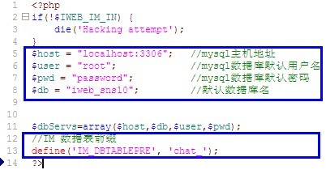
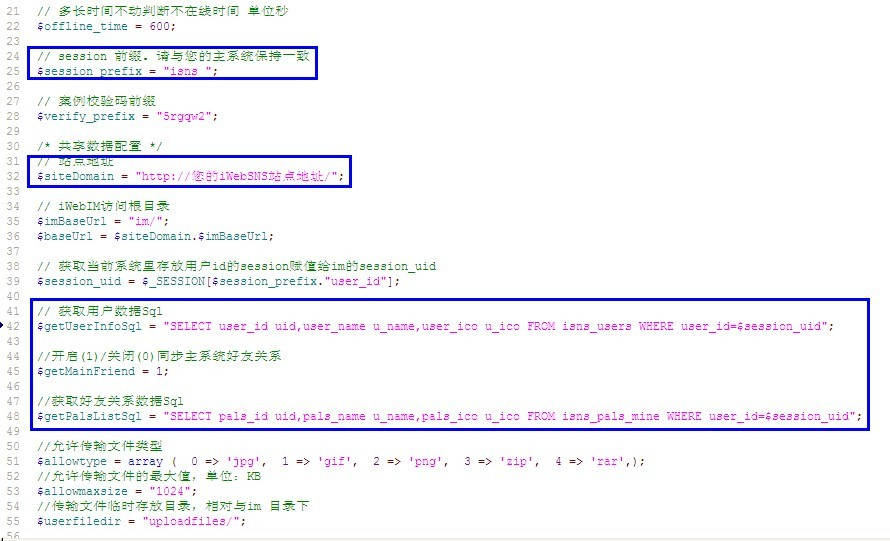

1. 确定您已安装好iWebSNS。
2. 下载iWebIM安装包。 您可以从http://tech.jooyea.net/download.php获取到安装包。
3. 在您的iWebSNS安装目录下创建新目录 im/
4. 解压iWebIM安装包下的所有文件到im/目录
5. 打开文件 im/iweb_mini_lib/conf/dbconf.php
配置文件里头的数据库设置与您的当前iWebSNS里的数据库设置一致，修改下图蓝框内的配置信息：

6. 打开文件 im/configuration.php
修改下图蓝框内的配置信息

7. 打开sql文件 im/install.sql 在iWebSNS安装库里 创建四张表
8. iWebSNS 模板更改， 这里以default为例
1) 打开 templates/default/main.html 在最后一行加上代码
9. 操作完成进进入系统查看！
注：
这里的目录都基于iWebSNS安装目录。
如果服务器操作系统是Linux系统，注意将IM配置文件中指定的文件上传目录（“uploadfiles”）及子目录改为“777”